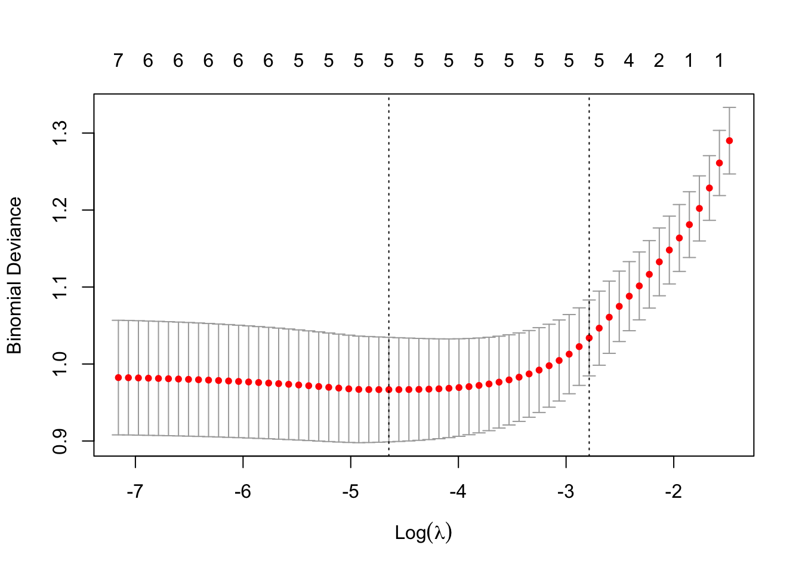

MA8701 Advanced methods in statistical inference and learning
Part 3: Ensembles. L17: Evaluating and comparing results from prediction models
Course homepage: https://wiki.math.ntnu.no/ma8701/2023v/start
Before we start

Literature
There is a long list of references in the end of this document, but for our reading list this document will suffice.
Evaluating and comparing results from prediction models
We will only consider using one data set. For comparing methods across many data sets see Boulesteix et al (2015).
We are not interesting in general “unconditional” results (for all possible training sets from some distribution) - and not to know if method A in general is better than method B in situations similar to ours.
We also have the “No free lunch theorem” of Wolpert (1996) stating that there is no such thing as the “best” learning algorithm.
We consider two different set-ups:
Data rich situation:
- We have used our training set to tune our model (choosing hyperparameters) - possibly by using cross-validation or some other technique.
- Then we have fitted the finally chosen model to the full training set, and used this final model to make predictions on the independent test set.
- If we want to compare results from two or more prediction models (A and B), when the same test set is used for all the models.
Data poor situation:
- We don´t have enough data to set aside observations for a test set.
- We need to use some type of resampling to evaluate and compare prediction models - the “common” choice is \(k\)-fold cross-validation.
- This is more difficult than for the data rich situation, because now independence of observations for testing cannot be assumed (more below).
What do we want to report?
Classification
We will only look at binary classification, but parts of the results may be used for each of the categories (vs the rest) for more than two classes.
- Estimate and confidence interval for misclassification rate or ROC-AUC (or other) on test observations for one prediction model.
- Is the misclassification rate (or ROC-AUC, or other) for prediction method A better than for prediction method B?
- Can this be extended to more than two methods?
This is by far the most popular situation in the literature.
Regression
Relate to ESL Ch7.1 with \(\text{Err}\) and \(\text{Err}_{\cal T}\).
- Estimate and confidence interval for evaluation criterion (mean square error of predictions) on test observations for one prediction model.
- Is prediction model A better than prediction model B?
- Can this be extended to more than two methods?
Much more difficult to “find” literature with methods here than for classification - seems to be far less popular.
Keep in mind that not only error rates govern which prediction models to use, also aspects like
- training time and
- interpretability plays an important role.
There might be
- controllable and
- uncontrollable factors
that influence the model fit and add variability to our model predictions.
It is always wise (helpful) to present results in graphical displays.
Group discussion
For your data analysis project, which of the above is relevant? Explain!
Data rich situation
Assumptions:
Both the training set (size \(N\)) and the test set (size \(M\)) are drawn as random samples from the population under study, and are independent of each other.
The training set is used to estimate (one or many) prediction model(s),
and predictions are provided (for each prediction method) for the \(M\) observations in the test set.
The \(M\) predictions \(\hat{y}_i\), \(i=1,\ldots, M\) are independent.
If we have predictions from two methods A and B, these are made on the same test observations, and the triplets \((y_i,\hat{y}_i^A,\hat{y}_i^B)\) are independent for \(i=1,\ldots,M\).
Classification
Example
We will use the classical data set of diabetes from a population of women of Pima Indian heritage in the US, available in the R MASS package. The following information is available for each woman:
- diabetes:
0= not present,1= present - npreg: number of pregnancies
- glu: plasma glucose concentration in an oral glucose tolerance test
- bp: diastolic blood pressure (mmHg)
- skin: triceps skin fold thickness (mm)
- bmi: body mass index (weight in kg/(height in m)\(^2\))
- ped: diabetes pedigree function.
- age: age in years
We will use the default division into training and test in the MASS library, with 200 observations for training and 332 for testing.
Code
Pima.tr$diabetes=as.numeric(Pima.tr$type)-1
Pima.te$diabetes=as.numeric(Pima.te$type)-1
train=Pima.tr[,c(1:7,9)]
test=Pima.te[,c(1:7,9)]
colnames(test)=colnames(Pima.te)[c(1:7,9)]
–
Test set classification
223 non-diabetes and 109 diabetes cases
[1] "Lasso" classlasso
0 1
0 212 11
1 57 52[1] "Random forest" classrf
0 1
0 193 30
1 44 65Binomial CI
A common evaluation criterion is the mis- (or correct) classification rate.
Let \(p\) be the probability of success (correct classification) for a prediction method. In our test set we have \(M\) independent observations, with associated predictions \(\hat{y}_i\). We use some rule to define if the prediction is a success or a failure.
The number of successes \(X\) then follow a binomial distribution with \(M\) trials and success probability \(p\), and
\[\hat{p}=\frac{X}{M}\] with mean \(p\) and variance \(\frac{p(1-p)}{M}\).
A common way to construct a confidence interval for the success probability is to use the normal approximation \[ Z=\frac{\hat{p}-p}{\sqrt{\frac{\hat{p}(1-\hat{p})}{M}}} \sim N(0,1)\] which gives the \((1-\alpha)100‰\) confidence interval
\[ \hat{p}\pm z_{\alpha/2}\sqrt{\frac{\hat{p}(1-\hat{p})}{M}}\] The Agresti-Coull interval adds 4 trials and 2 sucesses for a better performance (asymptotic method).
Exact versions (not using asymptotic normality) are the
- Clopper-Pearson intervals
- Blaker intervals by Blaker (2000) as implemented in Klaschka (2010).


[1] "lasso"[1] "Normal approx CI"[1] 0.7517700 0.8385915[1] "Clopper Pearson CI"
Exact binomial test
data: X and M
number of successes = 264, number of trials = 332, p-value < 2.2e-16
alternative hypothesis: true probability of success is not equal to 0.5
95 percent confidence interval:
0.7477123 0.8372941
sample estimates:
probability of success
0.7951807 [1] "Blaker CI"[1] 0.7486001 0.8367722[1] "randomforest"[1] "Normal approx CI"[1] 0.7323405 0.8218763[1] "Clopper Pearson CI"
Exact binomial test
data: X and M
number of successes = 258, number of trials = 332, p-value < 2.2e-16
alternative hypothesis: true probability of success is not equal to 0.5
95 percent confidence interval:
0.7284615 0.8207345
sample estimates:
probability of success
0.7771084 [1] "Blaker CI"[1] 0.7295334 0.8201579McNemar´s test
Is method A different from method B?
Consider \(M\) pairs of observations (predictions from method A and B) in the test set, and classify as
- successes (1) - for correct classifications
- failures (0) - for wrong classifications
(The true response \(y\) in the test set is used to define success and failure.)
The pairs are assumed to be independent, but the two observations within a pair may be dependent. We call this matched pairs.
The numbers \((X_{01},X_{10},X_{00},X_{11})\) of the four possible outcomes of each pair, \(01\), \(10\), \(00\) and \(11\), respectively, are assumed to follow a multinomial distribution with parameters \((M;q_{01},q_{10},q_{00},q_{11})\).
To test the null hypothesis that the probability of success in the first observation of a pair is equal to the probability of success in the second observation (the two methods have the same performance)
\[q_{10}+q_{11}=q_{01}+q_{11}, \text{ or }q_{10}=q_{01}\]
McNemar’s test statistic,
\[T(X_{01},X_{10})=(X_{01}-X_{10})^2/(X_{01}+X_{10})\]
is often used, with large values indicating rejection (McNemar, 1947, Agresti, 2002 pp. 410–412).
Asymptotically \(T\) follows a \(\Chi^2\) distribution with 1 degree of freedom when the null hypothesis is true.
The sum \(X_{01}+X_{10}\) need to be large (rule of thumb at least 25), unless a two-sided binomial version of the test is recommended (with \(n=X_{01}+X_{10}\) and \(p=0.5\) and number of successes equal \(X_{01}\)). This is a conditional test (conditional tests are valid).
An exact conditional \(p\)-value can also be calculated by enumeration.
Code
tab=table(classlasso==test$diabetes,classrf==test$diabetes)
tab
FALSE TRUE
FALSE 50 18
TRUE 24 240Code
mcnemar.test(tab,correct=FALSE)
McNemar's Chi-squared test
data: tab
McNemar's chi-squared = 0.85714, df = 1, p-value = 0.3545Code
binom.test(tab[1,2],n=tab[1,2]+tab[2,1],p=0.5)
Exact binomial test
data: tab[1, 2] and tab[1, 2] + tab[2, 1]
number of successes = 18, number of trials = 42, p-value = 0.4408
alternative hypothesis: true probability of success is not equal to 0.5
95 percent confidence interval:
0.2772067 0.5903887
sample estimates:
probability of success
0.4285714 Conclusion: with respect to using 0.5 as cut-off for classification as disease then the paired McNemar two-sided test that lasso and RF produce equally good results is not rejected at level 0.05.
If we have more than two methods to compare, the Cochrane Q-test can be used. Wikipedia
Confidence intervals for paired proportions
Confidence interval for the difference between success-proportions can be calculated using for example an asymptotic Wald interval or by inverting hypotheses tests \(p\)-values.
See Fagerland et al (2014) for this and other choices, not R package but see references for R-scripts.
The package ExactCIdiff is presented in the R Journal
ROC-AUC
In a two class problem - assume the classes are labelled “-” (non disease,0) and “+” (disease,1). In a population setting we define the following event and associated number of observations.
| Predicted - | Predicted + | Total | |
|---|---|---|---|
| True - | True Negative TN | False Positive FP | N |
| True + | False Negative FN | True Positive TP | P |
| Total | N* | P* |
(\(N\) in this context not to be confused with our sample size…which we have called \(M\))
Sensitivity (recall) is the proportion of correctly classified positive observations: \(\frac{\# \text{True Positive}}{\# \text{Condition Positive}}=\frac{\text{TP}}{\text{P}}\).
Specificity is the proportion of correctly classified negative observations: \(\frac{\# \text{True Negative}}{\# \text{Condition Negative}}=\frac{\text{TN}}{\text{N}}\).
We would like that a classification rule have both a high sensitivity and a high specificity.

Other useful quantities:
| Name | Definition | Synonoms |
|---|---|---|
| False positive rate | FP/N | Type I error, 1-specificity |
| True positive rate | TP/P | 1-Type II error, power, sensitivity, recall |
| Positive predictive value (PPV) | TP/P* | Precision, 1-false discovery proportion |
| Negative predictive value (NPV) | TN/N* |
Where the PPV can be used together with the sensitivity to make a precision-recall curve more suitable for low case rates.
The receiver operating characteristics (ROC) curve gives a graphical display of the sensitivity against specificity, as the threshold value (cut-off on probability of success or disease) is moved over the range of all possible values. An ideal classifier will give a ROC curve which hugs the top left corner, while a straight line represents a classifier with a random guess of the outcome.
- The ROC-AUC score is the area under the ROC curve. It ranges between the values 0 and 1, where a higher value indicates a better classifier.
- The AUC score is useful for comparing the performance of different classifiers, as all possible threshold values are taken into account.
- If the prevalence (case proportion) is very low (0.01ish), the ROC-AUC may be misleading, and the PR-AUC is more commonly used (but there do not exist a large body of theory here).
The ROC-AUC (based on the trapezoid rule) can be seen to be equal to (a scaled version of) the nonparametric Wilcoxon-Mann-Whitney statistic (DeLong et al 1988).
In the R package pROC several methods to produce confidence intervals for the ROC and ROC-AUC exists, and tests to compare ROC-AUC from two methods (paired or unpaired).
In addition, the R package precrec also calculates the area under the PR-curve (PR-AUC)
Below we use:
- DeLong et al confidence intervals for the ROC and the ROC-AUC for each prediction method.
- DeLong et al test for two paired (correlated) ROC curves. This test is based on asymptotic normal theory for the U-statistic.
[1] "Lasso ROC-AUC with CI"Area under the curve: 0.857495% CI: 0.816-0.8989 (DeLong)
[1] "RF ROC-AUC with CI"95% CI: 0.7736-0.8691 (DeLong)[1] "Comparing AUC for lasso and RF"
DeLong's test for two correlated ROC curves
data: lassoroc and rfroc
Z = 2.4179, p-value = 0.01561
alternative hypothesis: true difference in AUC is not equal to 0
95 percent confidence interval:
0.00683753 0.06536389
sample estimates:
AUC of roc1 AUC of roc2
0.8574485 0.8213478 Conclusion: with respect to ROC-AUC then the two-sided test that lasso and RF produce equally good results is rejected at level 0.05.
Observe that the lasso is significantly better than RF wrt ROC-AUC, but not wrt misclassifiation error.
Regression
For regression we would like to focus on providing an estimate for the \(\text{Err}_{\cal T}\) for a squared error rate.
\[ \text{Err}_{\cal T}=\text{E}[L(Y,\hat{f}(X))\mid {\cal T}]\] Here the expected value is with respect to \((X,Y)\), but the training set is fixed - so that this is the test set error is for this specific training set \({\cal T}\).
In ELS Ch7.1 we saw that the mean squared error on the test set was a natural estimator.
In the unconditional version, we take expected value over ALL that is random - including the training set \[ \text{Err}=\text{E}(\text{E}[L(Y,\hat{f}(X))\mid {\cal T}])=\text{E}_{\cal T} [\text{Err}_{\cal T}]\]
However, we did not work to provide an estimate of the variability of this estimate - or how to provide a confidence interval for \(\text{Err}_{\cal T}\).
Let the mean squared error on the test set be denoted \(\widehat{\text{MSEP}}\).
If we can assume that the “residuals” on the test set \(y_i-\hat{y}_i\) follow a normal distribution with some mean \(\mu_i\) and some variance \(\sigma_i^2\), then there is a relationship between the \(\widehat{\text{MSEP}}\) and a sum of non-central \(\chi^2\) distributions, see Faber (1999). However, it is not clear how to turn that into a confidence interval for \(\text{Err}_{\cal T}\).
Not seen in literature: Another possibility is to use bootstrapping on the “test set residuals”. This can provide a bootstrap confidence interval for the \(\text{Err}_{\cal T}\). With bootstrapping it would also be possible to look at randomly flipping the A and B method to get the distribution of the \(\widehat{\text{MSEP}}\) under the null hypothesis that the two methods are equal, and use tha percentage of times the bootstrap samples are larger than the observed \(\widehat{\text{MSEP}}\) to be the \(p\)-value.
Data poor (small sample) situation
We may also refer to this as a small sample situation, and in this case we need to resort to resampling to get an estimate of the mean squared error , misclassification error, or similar - on “new” data.
We are again interested in estimating the conditional (on the training data) \(\text{Err}_{\cal T}\), but as we saw in ELS Ch 7.10-7.11, using resampling techniques we will instead be providing an estimate for the unconditional \(\text{Err}\).
That might of cause be ok for us.
We have in ELS Ch 7 looked at cross-validation and bootstrapping.
Cross-validation
Remember from ELS Ch 7.10 that with cross-validation the \(\text{Err}\) estimate:
The allocation of observation \(\{1,\ldots,N\}\) to folds \(\{1,\ldots,K\}\) is done using an indexing function \(\kappa: \{1,\ldots,N\} \rightarrow \{1,\ldots,K\}\), that for each observation allocate the observation to one of \(K\) folds.
Further, \(\hat{f}^{-k}(x)\) is the fitted function, computed on the observations except the \(k\)th fold (the observations from the \(k\)th fold is removed).
The CV estimate of the expected prediction error \(\text{Err}=\text{E}_{\cal T} \text{E}_{X^0,Y^0}[L(Y^0,\hat{f}(X^0))\mid {\cal T}]\) is then
\[ \text{CV}(\hat{f})=\frac{1}{N}\sum_{i=1}^N L(y_i,\hat{f}^{-\kappa(i)}(x_i))\]
Can the validation fold results be handled like the test set?
Question:
Can we handle the predictions in the hold-out folds \(\hat{y}_i\) as independent predictions at the observations \(x_i\) - as we did in the data rich situation above (when we had a separate test set and used the “same” full training set for fitting the model)?
To address this a simulation study is conducted. Here
- data are simulated to follow a simple linear regression.
- \(N=50\).
- The observations are divided into 5 fold of 10 observations.
- Then a 5-fold CV is performed where a simple linear regression is fitted on the training folds and predictions are performed in the test fold.
- Residuals are then formed for the test fold.
The simulations are repeated B=1000 times, and correlation between the N residuals for the test folds are calculated.
The question to be checked is if the residuals for observations in the same fold are correlated in a different way than residuals in different folds. If that is the case, then the residuals can not be seen to be independent, and standard methods to construct CI and perform a test is not valid.
Code
K=5
B=1000
N=50
b0=0
b1=2
sigma=0.2
k=rep(1:K,each=N/K)
predmat=matrix(ncol=N,nrow=B)
resmat=matrix(ncol=N,nrow=B)
set.seed(123)
for (b in 1:B)
{
x=runif(N,0,1)
eps=rnorm(N,0,sigma)
y=b0+b1*x+eps
for (i in 1:K)
{
fit=lm(y~x,subset=(k!=i))
predmat[b,k==i]=predict(fit,newdata=data.frame(x=x[k==i]))
resmat[b,k==i]=predmat[b,k==i]-y[k==i]
}
}
#corr=cor(predmat)
#corrincr=6*corr-diag(x=5,N,N)
#corrplot(corrincr)
# correlation between predictions - not seems to be a problem
corr2=cor(resmat)
corr2incr=6*corr2-diag(x=5,N,N)[1] "Mean correlation within folds"[1] 0.02533422[1] "Mean correlation between folds"[1] -0.03049688[1] 12The correlation plot shows 6*correlation (just to get colours stronger) for the residuals (difference between prediction and truth) between observations within and between folds.
There are 10 observations in each of 5 folds - ordered so that observations labelled 1-10 is fold 1, observation 11-20 is fold 2 etc. Observe that the correlation matrix has a block diagonal structure where the trend is that the observations in the same fold are slightly (numbers divided by 6) positive correlated, while the observations from different folds (away from the diagonal) are slightly negatively correlated (again divide the numbers by 6).
This means that the residuals from a 5-fold CV can not be seen to be independent across all observations, but will exhibit slight positive and negative correlations.
There are \(50*49/2=1225\) unique pairs of observations (residuals) for the simulated example. There are 5 folds and the average correlation for the 5 times \(10*9/2=45\) pairs = 225 pairs within each fold is 0.0253342.
The average correlation for the 1000 pairs between folds is -0.0304969.
However - testing if the correlation is different from null for all possible pairs of observation of the residuals (with 50 observation we have \(50*49/2\) pairs), only gave a significant result for 12 using FDR cut-off 0.05.

The boxplot of the correlation between residuals are taken between two folds, labelled on the horizonal axes.
Most articles state that this is a substantial problem, mainly because for constructing tests the variance of the test statistics is underestimated with positively correlated tests. However, other articles like Wong and Yang (2017) do not consider this a problem.
What can we present from the CV?
We have now focus on some loss function, like squared loss, binomial deviance, cross-entropy loss.
When we performed model selection with CV for the lasso we plotted some mean and standard error. How did we then calculate the standard error and the mean? Can we use this standard error to calculate a confidence interval?
We had \(N\) observations in the training set and choose \(K\)-fold CV:
\[ \text{CV}(\hat{f})=\frac{1}{N}\sum_{i=1}^N L(y_i,\hat{f}^{-k(i)}(x_i))\]
Assuming that \(N=K \cdot N_K\) so that the number of observations in each fold \(N_j\) is the same and equal to \(N_K\).
\[ \text{CV}(\hat{f})=\frac{1}{K}\sum_{j=1}^K \frac{1}{N_K}\sum_{i \in k(i)} L(y_i,\hat{f}^{-k(i)}(x_i))=\frac{1}{K}\sum_{j=1}^K \widehat{\text{CV}}_j\] What we plotted was the \(\frac{1}{K}\sum_{j=1}^K \widehat{\text{CV}}_j\) as the estimator for the evaluation criterion, and then \(\pm 1\) standard error of this mean.
The variance of the mean was estimated as
\[\text{SE}^2(\hat{f})=\frac{1}{K}(\frac{1}{K-1}\sum_{j=1}^K (\widehat{\text{CV}}_j-\text{CV}(\hat{f}))^2 )\] Since the residuals within a fold are positively correlated and between folds are negatively correlated, we only present plots of \[\text{CV}(\hat{f}) \pm \text{SE}(\hat{f})\]
and are happy with that.
ROC-AUC on CV data
For the ROC-AUC two different strategies are possible:
- For each CV fold separately calculate the ROC-AUC, and then report average and standard error (as above) over the fold. This is called average approach.
- Use all predictions (across all folds) to calculate ROC_AUC. This is called pooled approach. Then results from the DeLongi method might not be completely correct due to the observations being positively correlated within folds and negatively correlated between folds.
Airola et al (2010) suggest an hybrid combination of the two methods.
None of these approaches provides CIs or hypothesis tests.
LeDell (2015, Section 5, page 53,55) develop CIs for cross-validated AUC.
The starting point is that the ROC-AUC theoretically can be interpreted as: “the probability that a randomly selected positive sample will rank higher than a randomly selected negative sample”.
\[AUC(P_0,f)=P_0(f(X_1)>f(X_2) | Y_1=1,Y_2=0)\] where \((X_1,Y_1)\) and \((X_2,Y_2)\) are samples from \(P_0\).
The empirical AUC can be written
\[AUC(P_n,f)=\frac{n_0n_1}\sum_{i=1}^{n_0}\sum_{j=1}^{n_1}I(f(X_j)>f(X_i))\] where \(n_0\) is the number of observations with \(Y=0\) and \(n_1\) with \(Y=1\).
To arrive at an estimator based on \(V\)-fold CV the empirical formula above is used for each fold and then the \(V\)-fold CV ROC-AUC is the average of this over the folds.
The influence function (a core idea of the phd of LeDell) is used to find the variance of the cross-validated ROC-AUC (taking into account the correlation between folds) and to establish a CI. This is implemented in the R-package cvAUC.
$cvAUC
[1] 0.8973285
$se
[1] 0.01651137
$ci
[1] 0.8649668 0.9296902
$confidence
[1] 0.955x2 cross-validation
Dietterich (1998) might have been one of the first to point out the problems with the non-independence between observations from different folds.
Strategy:
First divide the data set into two equally sized sets. Use one as training set and one as validation set, and then swap the role of the two.
There is no overlap between these sets, so the idea is that the two sets of predictons on validations set are independent (but again, different estimated models are used on each part).
The reshuffle all data, and do the same again. Now you have results from “4 folds”.
Repeat three more times - and now you have “10 folds” (or, 5 times 2-fold CV used together).
The choice of 5 repetitions of 2-fold cross-validation is according to Dietterich (1998) that the overlap between the 5 repetions is not very large, but adding more repetitions will again give “too dependent” data. For fewer than 5 repetitions it will be hard to construct tests from these data (and constructing a test is the aim of Dietterich).
5x2 paired t-test
Dietterich (1998) only used the 5x2 CV set-up for comparing two classification prediction methods A and B.
Then the test is based on a paired t-test on the difference in error rates of the two classifiers on each fold. A lot of work has done into trying to get the most correct variance for this test. For formula and details see Dietterich (1998) or Alpaydin (2014) Ch 19.11.3.
Other solutions
Comparing misclassification rates for two prediction models: Dietterich (1998) show in a simulation study that using McNemars test on the training data gives a valid test (in the situations he studied).
References
- A. Agresti (2002): Categorical data analysis (2nd edition). John Wiley and Sons.
- Agresti A., Coull B.A.(1998) Approximate is better than ‘exact’ for interval estimation of binomial proportions. Am. Stat. 52:119–126. doi: 10.2307/2685469
- A. Airola, T. Pahikkala, W. Waegeman, B. De Baets and T. Salakoski (2010): An experimental comparison of cross-validated techniques for estimating the area under the ROC curve. Computational Statistics and Data Analysis. 55, 1828-1844.
- E. Alpaydin (2014): Introduction to Machine Learning. 3rd edition, MIT Press 2014. Chapter 19: Design and Analysis of Machine Learning Experiments
- Blaker, H. (2000) Confidence curves and improved exact confidence intervals for discrete distributions. Canadian Journal of Statistics 28: 783-798. (Corrigenda: Canadian Journal of Statistics 29: 681.)
- J. Brownlee (2016): How To Compare Machine Learning Algorithms in Python with scikit-learn
- J. Brownlee (2018): Statistical Significance Tests for Comparing Machine Learning Algorithms
- R. R. Bouckaert and E. Frank (2004): Evaluating the Replicability of Scinificance Tests of Comparing Learning Algorithms. In H. Dai, R. Shrikat and C. Zhang. Advances in Knowledge Discovary and Data Mining. Springer.
- Anne-Laure Boulesteix, Robert Hable, Sabine Lauer & Manuel J. A. Eugster (2015) A Statistical Framework for Hypothesis Testing in Real Data Comparison Studies, The American Statistician, 69:3, 201-212, DOI: 10.1080/00031305.2015.1005128
- Clopper,C.J.,and Pearson,E.S.(1934),“The Use of Confidence or Fiducial Limits Illustrated in the Case of the Binomial”, Biometrika 26, 404–413.
- DeLong ER, DeLong DM, Clarke-Pearson DL: Comparing the Areas under Two or More Correlated Receiver Operating Characteristic Curves: A Nonparametric Approach. Biometrics 1988, 44: 837–845. 10.2307/2531595
- T. G. Dietterich (1998): Approximate Statistical Tests for Comparing Supervised Classification Learning Algorithms
- N.M. Faber (1999): Estimating the uncertainty in estimates of root mean square error of prediction: application to determining the size of an adequate test set in multivariate calibration, Chemometrics and Intelligent Laboratory Systems, Volume 49, Issue 1, Pages 79-89, https://doi.org/10.1016/S0169-7439(99)00027-1 (https://www.sciencedirect.com/science/article/pii/S0169743999000271)
- M. Fagerland and S. Lydersen and P. Laake (2014): Tutorial in Biostatistics Recommended tests and confidence intervals for paired binomial proportions, Statistics in Medicine and R-code (not package) https://contingencytables.com/software-resources
- Klaschka, J. (2010). BlakerCI: An algorithm and R package for the Blaker’s binomial confidence limits calculation. Technical report No. 1099, Institute of Computer Science, Academy of Sciences of the Czech Republic, http://hdl.handle.net/11104/0195722.
- LeDell, Erin; Petersen, Maya; van der Laan, Mark. Computationally efficient confidence intervals for cross-validated area under the ROC curve estimates. Electron. J. Statist. 9 (2015), no. 1, 1583–1607. doi:10.1214/15-EJS1035. http://projecteuclid.org/euclid.ejs/1437742107.
- Ledell, Erin, Scalable ensemble learning and computationally efficient variance estimation. Phd Thesis (2015). https://github.com/ledell/phd-thesis
- Q. McNemar (1947): Note on the sampling error of the difference between correlated proportions or percentages. Psychometrika 12(2), 153-157.
- Xavier Robin, Natacha Turck, Alexandre Hainard, et al. (2011) “pROC: an open-source package for R and S+ to analyze and compare ROC curves”. BMC Bioinformatics, 7, 77. DOI: doi: 10.1186/1471-2105-12-77.
- G. Vanwinckelen and H. Blockeel (2012): On Estimating Model Accuracy with Repeated Cross-Validation. Proceedings of BeneLarn and PMLS.
- Wolpert, David (1996), “The Lack of A Priori Distinctions between Learning Algorithms”, Neural Computation, pp. 1341–1390.
- Tzu-Tsung Wong; Nai-Yu Yang (2017): Dependency Analysis of Accuracy Estimates in k-Fold Cross Validation IEEE Transactions on Knowledge and Data Engineering ( Volume: 29, Issue: 11, https://ieeexplore.ieee.org/document/8012491